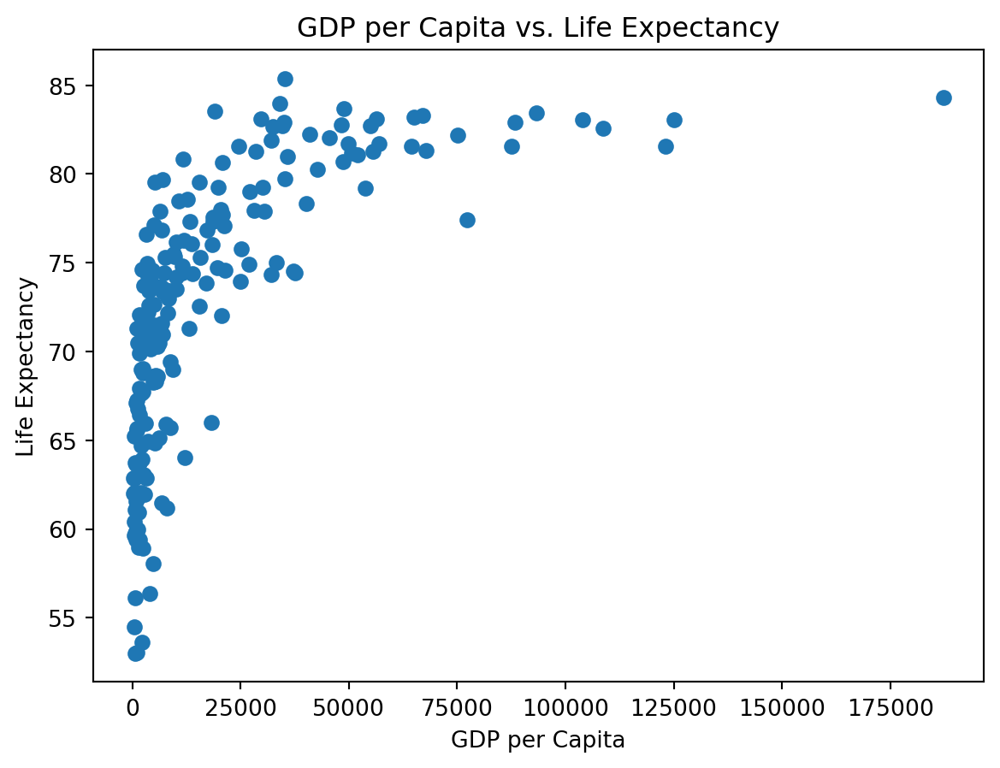
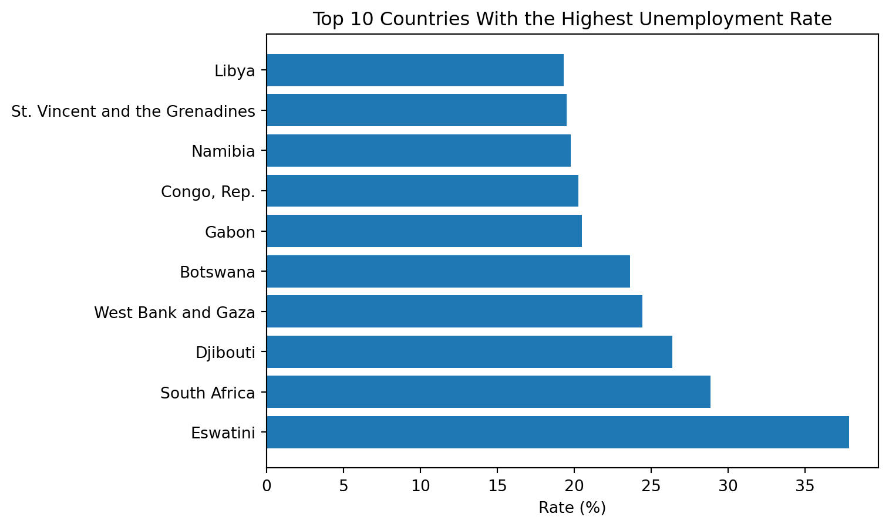

-The gdp per capita distribution has a wide range of values. The maximum gdp per capita is more than 10x the minimum.
-The life expectancy variable is relatively concentrated — over half of the countries have a life expectancy between 70-80 years.
-The unemployment rate of countries is also concentrated with the mean being 7.27% and the 75% quantile being 9.46%. However, the maximum unemployment rate is 37.85%.

Figure 1: This figure is a scatter plot of GDP per Capita vs. Life Expectancy for countries in the dataset
As GDP increases, life expectancy increases. A higher GDP means more economic flourishing, allowing more of the country to have access to a healthier lifestyle.

Figure 2: This bar chart shows the top 10 countries with the highest unemployment rates
Many of the countries on this list are in Africa.
For a visual plotting of GDP per Capita vs. Life expectancy please see Figure 1. For a bar graph of the top 10 countries with the highest unemployment rate please see Figure 2. A reference for the dataset is World Bank (1978). A reference towards inequality shown by the world indicators is from Pillarisetti (1997).
References
Pillarisetti, J Ram. 1997. “An Empirical Note on Inequality in the World Development Indicators.”Applied Economics Letters 4 (3): 145–47.
World Bank. 1978. World Development Indicators. World Bank.